Roofing systems · Sheet metal · Projects
Every roof system,one metal shop.
Whether you need a new roof or want to maintain an existing one, Guarantee Roofing has the roofing system for you, and a full service sheet metal shop to fabricate the details.
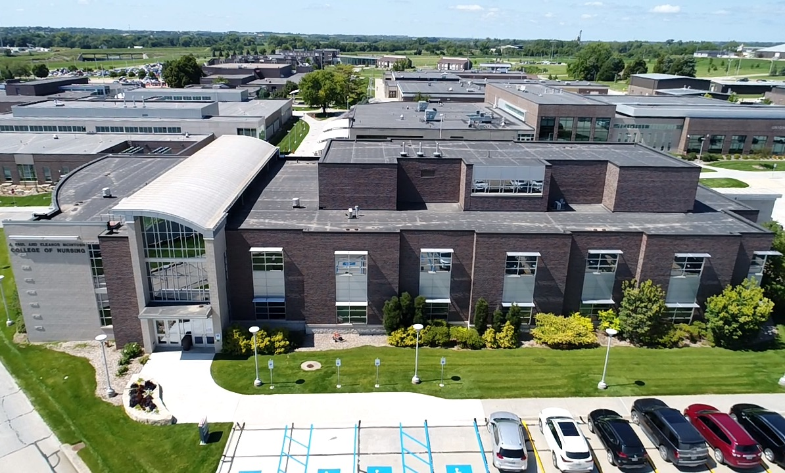
Commercial roofing services
Low slope to steep slope.
We design, fabricate and install a wide variety of roof systems. Warranties include material, labor and workmanship, spanning 5 to 30 years.
01EPDM rubber roofing
Single-ply EPDM rubber membrane for low slope commercial roofs, installed by our own crews.
02TPO heat-welded systems
TPO membranes with heat-welded seams. Our green roofing solutions provide overall savings for years to come.
03PVC single ply
PVC single-ply roof systems for commercial and industrial buildings.
04Hot tar & mod bit
Hot roof and modified bitumen systems, including tear-off and removal of the existing roof and taper insulation roof systems.
05Standing seam & retro-fit metal
Architectural standing seam roofs and retro-fit metal roofing that provides long-term performance without compromising future options within the structure.
We can also add a sub structure to put a sloped roof on your existing flat roof.
06Roof evaluations, repairs & maintenance
Roof inspections, maintenance and repairs, including reroofing of older buildings. If you have an older downtown building that needs reroofing, our experience helps us give you a cost-effective, minimally disruptive solution to a leaky, failing roof, and keep your location looking pristine for years to come.
07Architectural metals
Standing seam roofing, mechanically fastened snow guards, shop-fabricated gutters and downspouts, awnings, mansards and fascia systems.
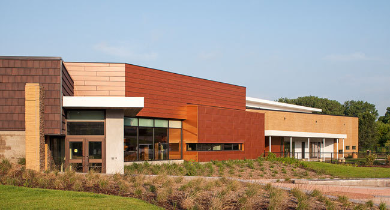
Sheet metal
Custom fabrication to meet all your needs.
In need of duct work, gutters or fabricated trim? Guarantee Roofing can custom fabricate to your specification. Roll form and standing seam panels can be rolled on site to the exact length, whether we are installing insulated wall panels, composite panels or custom fabrication.
- Custom sheet metal fabrication
- Architectural standing seam
- Wall panels
- Composite panels
- Caps, gravel stop & drip edge
- Gutters, downspouts & valleys
- Metal building trim
- Duct work & fittings
- Vent hoods
- Other metal products
Types of metal
A variety of gauges available.
Our suppliers
Project gallery
Completed roofing & sheet metal projects.
From Norfolk to Yankton, South Dakota, and Sioux City, Iowa.
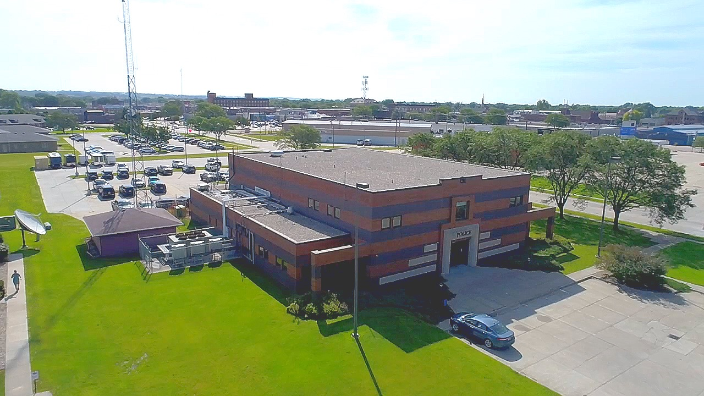
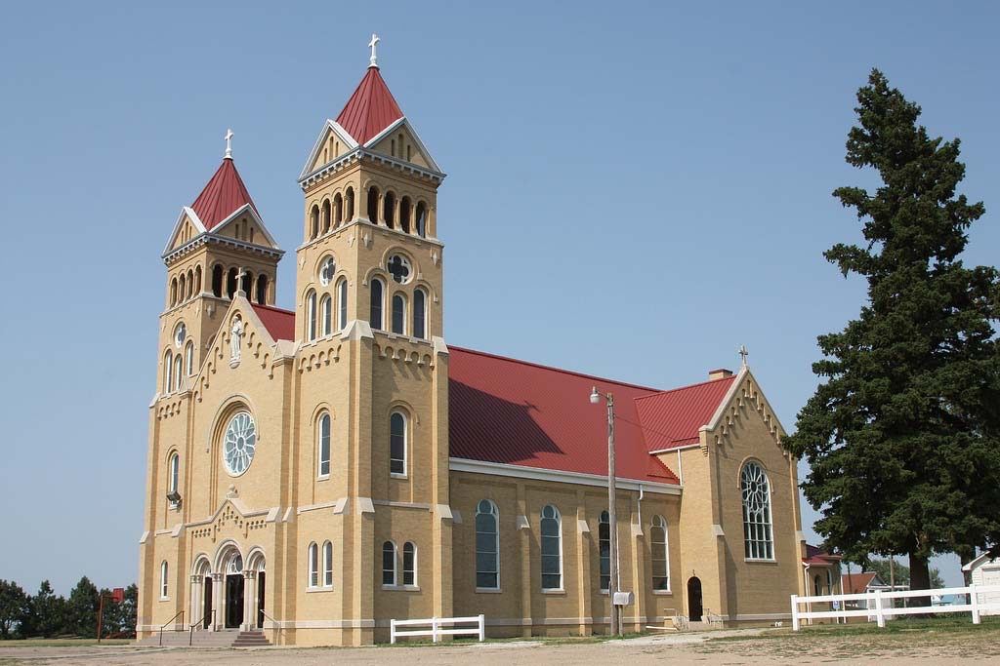
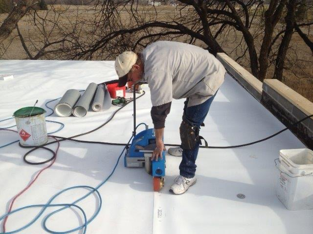
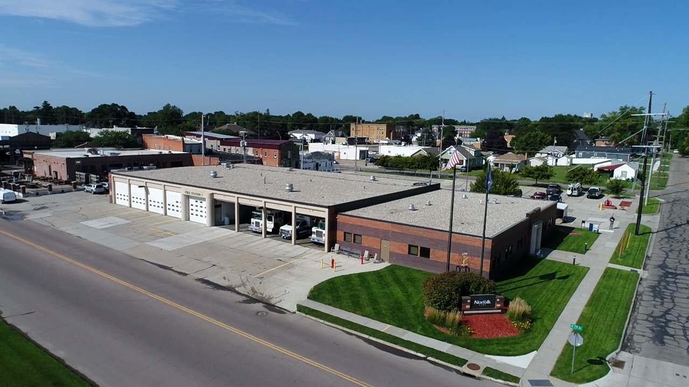
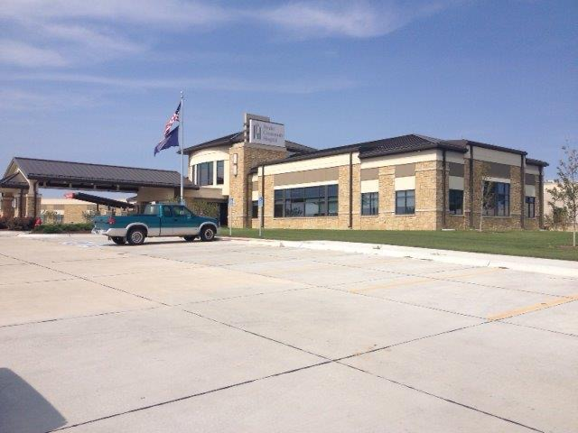
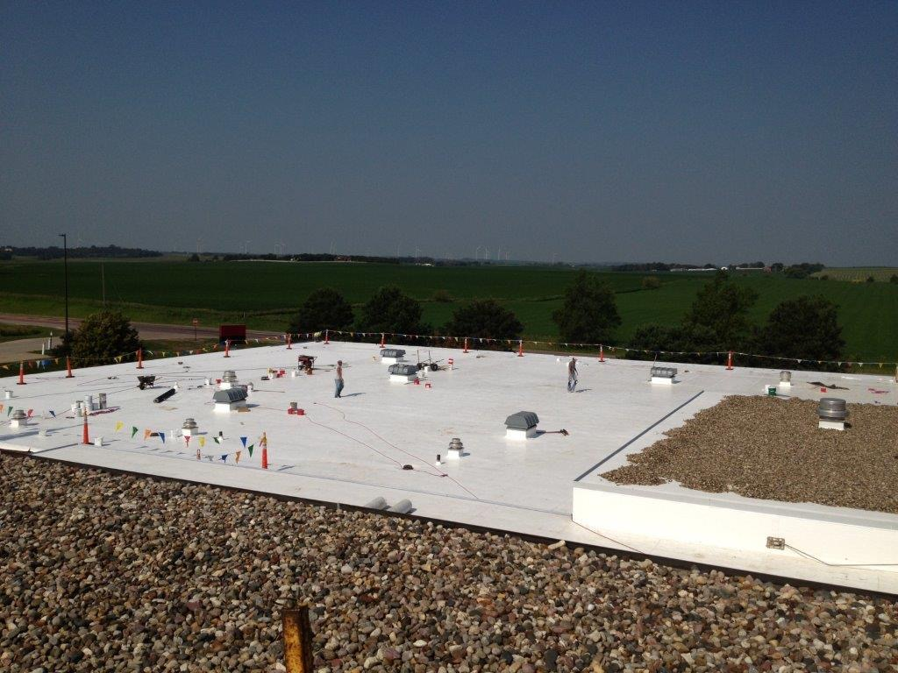
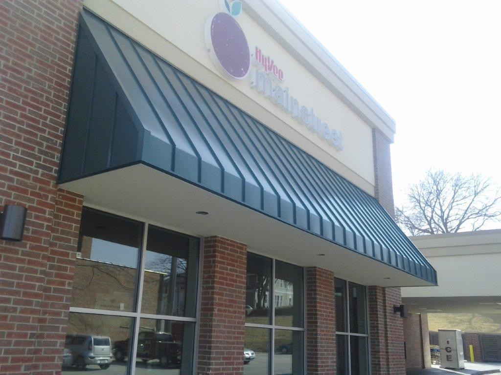
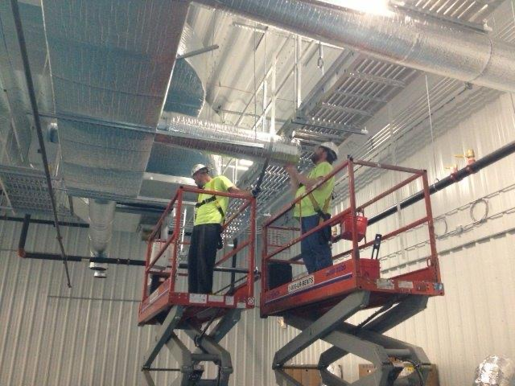
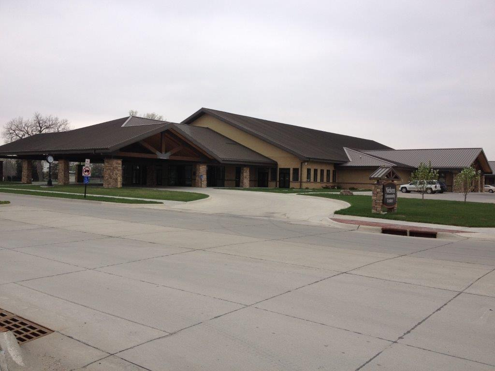

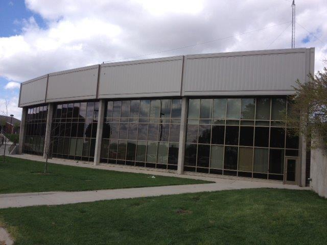
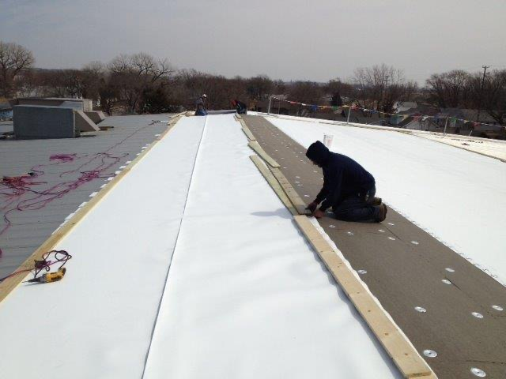

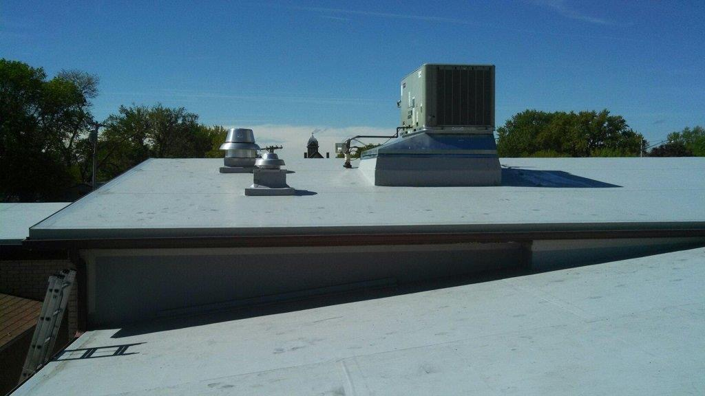
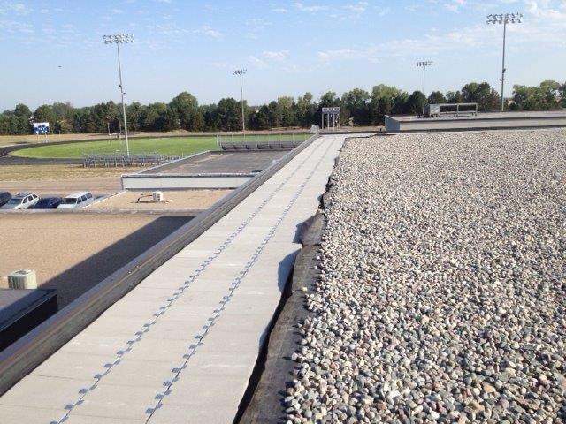
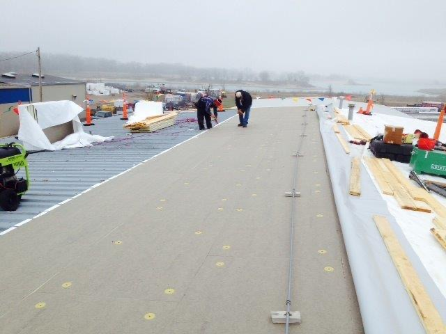
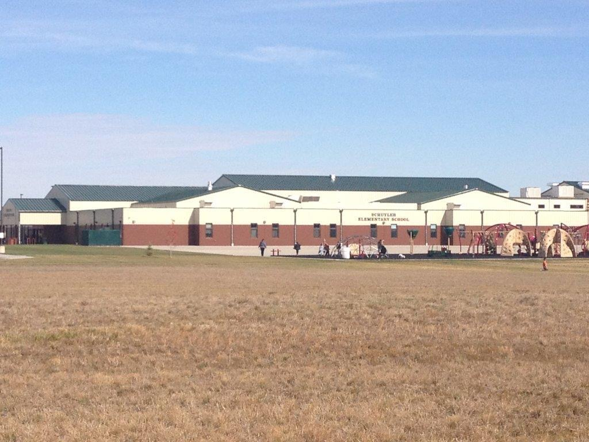
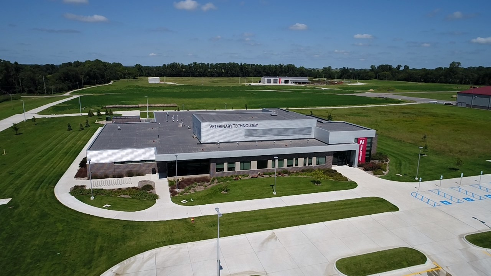
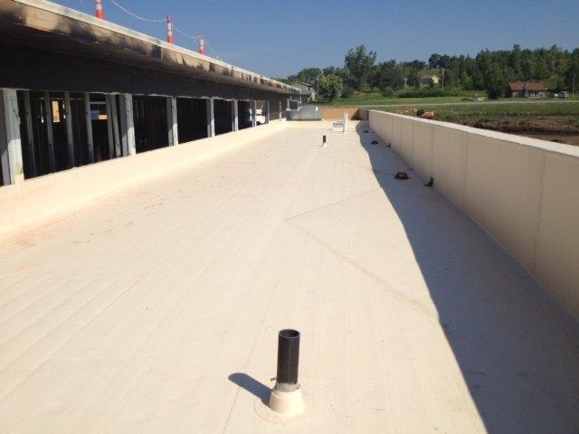
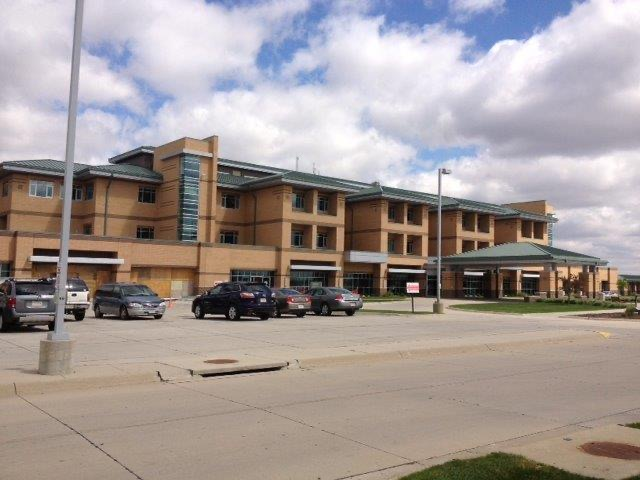

Need a roof? Call or click to reach us.